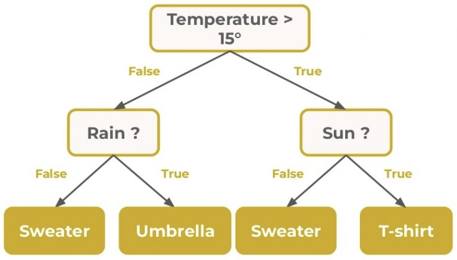
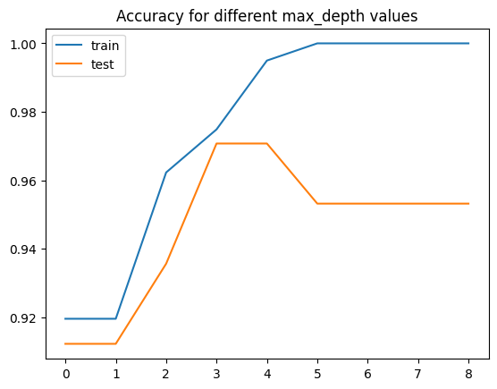

from sklearn.datasets import load_breast_cancer
from sklearn.model_selection import train_test_split
from sklearn.tree import DecisionTreeClassifier
from sklearn.metrics import classification_report
import pandas as pd
dataset = load_breast_cancer()
X = pd.DataFrame(dataset.data, columns=dataset.feature_names)
y = dataset.target_names[dataset.target]
X_train, X_test, y_train, y_test = train_test_split(X, y, test_size=0.3, random_state=34)
model = DecisionTreeClassifier(max_depth=3, criterion="entropy", random_state=34)
model.fit(X_train, y_train)
y_pred = model.predict(X_test)
print(classification_report(y_test, y_pred))Decision Trees and Random Forest
Introduction
In this chapter we will cover Decision Trees and Random Forest.
However, we first need to quickly define entropy of a random variable.
Entropy
The surprisal of a random event \(E\) is defined to be equal to \[ -\log_2(\mathbb{P}(E)), \] where \(\mathbb{P}(E)\) is the probability that \(E\) occurs.
So the less likely the event is to occur the bigger its surprisal.
Entropy
Suppose \(X\) is a finite discrete random variable taking values \(x_1, \dots x_n.\) The entropy of \(X\) is then defined to be the expected value of surprisal, it is denoted \(H(X).\) That is \[ H(X) = -\sum_{i=1}^n p(x_i)\log_2(p(x_i)), \] where \(p\) is the probability mass function of \(X.\)
Entropy
Entropy is used to measure how uncertain the outcome of a random variable is. The higher the entropy the more uncertain.
For example, suppose you have a fair coin. Then the outcome of a coin toss is very uncertain, its as likely to go either way. The entropy in this case is \[ -\frac{1}{2}\log_2\left(\frac{1}{2}\right)-\frac{1}{2}\log_2\left(\frac{1}{2}\right)= 1. \] This is as large as entropy can be for a Bernoulli random variable.
Entropy
Now suppose you have a biased coin that lands on heads 90% of the time. The outcome of the coin toss is then very certain - its going to be heads most of the time. The entropy is also lower \[ -\frac{9}{10}\log_2\left(\frac{9}{10}\right)-\frac{1}{10}\log_2\left(\frac{1}{10}\right)\approx 0.47. \]
Entropy
Lastly, suppose you have a coin that has heads on both sides. The coin toss has no uncertainty at all with such a coin! Its entropy is \(0\), indeed \[ -1\log_2\left(1\right)=0. \]
We will use entropy when training decision trees.
Decision Trees
I’m sure you’ve all seen a decision tree before. They look something like this:
Decision Trees
How to train a decision tree?
Suppose we are trying to solve a classification problem. That is we have some training data with features and a target variable with \(n\) classes.
A decision tree is going to sort our training samples into groups, one group for each node. Then we can compute the entropy of each node. When we split a parent node into two nodes we want the split to minimize entropy as much as possible.
Decision Trees
Define information gain as \[ H(\text{parent}) - \left(\frac{N_{\text{left}}}{N_{\text{parent}}}H(\text{left})+\frac{N_{\text{right}}}{N_{\text{parent}}}H(\text{right})\right), \] where \(N_\text{parent}, N_{\text{left}}, N_{\text{right}}\) denotes the number of samples in the respective node.
For each feature we compute the split that optimizes information gain and then choose the feature with the highest information gain to split on.
Decision Trees
We then do this procedure iteratively starting from the root node that contains all samples. This algorithm does not produce an optimal tree, but there is no known polynomial time algorithm that does, so it’ll have to do.
There are other measures you can use to compute information gain instead of entropy, such as Gini impurity.
Decision Trees
We can train a decision tree using sklearn. We’ll use this dataset.
Decision Trees
precision recall f1-score support
benign 0.96 0.94 0.95 111
malignant 0.89 0.93 0.91 60
accuracy 0.94 171
macro avg 0.93 0.94 0.93 171
weighted avg 0.94 0.94 0.94 171
Overfitting
The main problem with decision trees is that they tend to overfit.
Overfitting is a phenomenon where a model learns the noise in the training set rather than the signal. It then is not able to generalize to the data outside the training set.

Overfitting
Let’s illustrate overfitting.
from sklearn.metrics import accuracy_score
losses = []
for depth in range(1, 10):
model = DecisionTreeClassifier(max_depth=depth, criterion="entropy", random_state=34)
model.fit(X_train, y_train)
losses.append([
accuracy_score(y_train, model.predict(X_train)),
accuracy_score(y_test, model.predict(X_test))
])
pd.DataFrame(losses, columns=['train', 'test']).plot(title='Accuracy for different max_depth values')Overfitting

Random Forest
Different model types have different techniques for dealing with overfitting.
In case of decision trees, one approach is to train several decision trees on randomly selected subsets of the features and training data. Then these trees are polled to generate the final prediction. This modelling technique is called Random Forest.
Random Forest
Decision Trees and Random Forest can also be used on regression problems. In a regression problem we are trying to predict a continuous variable given some inputs.
Let’s train a Random Forest Regression model on California housing dataset that ships with sklearn.
from sklearn.datasets import fetch_california_housing
from sklearn.model_selection import train_test_split
import pandas as pd
data = fetch_california_housing()
df = pd.DataFrame(data["data"], columns=data["feature_names"])
X_train, X_test, y_train, y_test = train_test_split(df, data["target"], test_size=0.2, random_state=34)
X_train.head(10)Random Forest
| MedInc | HouseAge | AveRooms | AveBedrms | Population | AveOccup | Latitude | Longitude | |
|---|---|---|---|---|---|---|---|---|
| 7067 | 4.4318 | 36.0 | 5.721014 | 1.050725 | 816.0 | 2.956522 | 33.95 | -118.01 |
| 18972 | 5.2636 | 1.0 | 7.694030 | 1.279851 | 872.0 | 3.253731 | 38.23 | -122.00 |
| 10877 | 3.9844 | 38.0 | 5.403042 | 1.140684 | 1236.0 | 4.699620 | 33.72 | -117.88 |
| 20440 | 6.4963 | 6.0 | 7.799038 | 1.110096 | 6700.0 | 3.221154 | 34.24 | -118.77 |
| 15424 | 4.3542 | 34.0 | 5.578313 | 0.969880 | 978.0 | 2.945783 | 33.20 | -117.27 |
| 20222 | 3.5294 | 33.0 | 4.310962 | 1.098434 | 1835.0 | 2.052573 | 34.29 | -119.29 |
| 16512 | 2.6368 | 34.0 | 5.769022 | 1.051630 | 1310.0 | 3.559783 | 37.72 | -121.22 |
| 2622 | 1.8993 | 17.0 | 4.699367 | 1.091772 | 823.0 | 2.604430 | 40.95 | -124.10 |
| 6033 | 3.8438 | 28.0 | 5.422432 | 1.120545 | 3502.0 | 3.670860 | 34.08 | -117.73 |
| 3421 | 2.8000 | 34.0 | 4.553531 | 0.972665 | 2391.0 | 5.446469 | 34.28 | -118.42 |
Random Forest
We are given some information on a district and our goal is to predict the median house value in that district. The target variable is expressed in $100k.
Normally, we would first do data exploration and cleaning, but since we talked about this in the last chapter, let’s jump straight into model code.
Random Forest
from sklearn.pipeline import Pipeline
from sklearn.ensemble import RandomForestRegressor
from sklearn.impute import SimpleImputer
from sklearn.preprocessing import StandardScaler
def make_pipeline():
model = RandomForestRegressor(
n_estimators=100,
max_depth=3,
max_features="sqrt"
)
pipeline = Pipeline(
steps=[
("imputer", SimpleImputer(strategy="median")),
("scaler", StandardScaler()),
("model", model),
],
)
return pipeline
pipeline = make_pipeline()
pipelineRandom Forest
Pipeline(steps=[('imputer', SimpleImputer(strategy='median')),
('scaler', StandardScaler()),
('model',
RandomForestRegressor(max_depth=3, max_features='sqrt'))])In a Jupyter environment, please rerun this cell to show the HTML representation or trust the notebook. On GitHub, the HTML representation is unable to render, please try loading this page with nbviewer.org.
Pipeline(steps=[('imputer', SimpleImputer(strategy='median')),
('scaler', StandardScaler()),
('model',
RandomForestRegressor(max_depth=3, max_features='sqrt'))])SimpleImputer(strategy='median')
StandardScaler()
RandomForestRegressor(max_depth=3, max_features='sqrt')
Random Forest
We are going to use mean square error (MSE) to evaluate our model. It is computed as follows: \[ \text{MSE} = \frac{1}{n} \sum_{i=1}^n (y_i^{\text{true}}-y_i^{\text{pred}})^2 \]
Hyperparameters
As you might have noticed, in the RandomForestRegressor we specified some parameters:
n_estimators: number of trees to fit;max_depth: maximum depth of a fitted tree.
There are more, you can see all of the in the documentation.
Hyperparameters
These are called model hyperparameters. A hyperparameter is a model parameter that the model does not learn while training. These are left for the model user to specify.
So we have a classification:
- Weights: parameters that the model learns while training.
- Hyperparameters: parameters that the model does not learn while training.
Hyperparameters
Question is, how do we pick optimal hyperparameters?
Usually, it is done through trial and error by trying different combinations of reasonable values and seeing which perform best on the test dataset. This is called grid search.
Grid Search
To implement a grid search we first need to unhardcode the hyperparameters in our pipeline.
def make_pipeline(n_estimators=100, max_depth=3):
model = RandomForestRegressor(
n_estimators=n_estimators,
max_depth=max_depth,
max_features="sqrt",
n_jobs=-1 # Use max available processors for training and inference
)
pipeline = Pipeline(
steps=[
("imputer", SimpleImputer(strategy="median")),
("scaler", StandardScaler()),
("model", model),
],
)
return pipelineGrid Search
Now implementing a grid search from scratch is not difficult.
best_n_estimators = -1
best_max_depth = -1
best_mse = 1000
for n_estimators in [50, 100, 200, 500]:
for max_depth in [2, 3, 4, 5]:
pipeline = make_pipeline(n_estimators=n_estimators, max_depth=max_depth)
pipeline.fit(X_train, y_train)
y_pred = pipeline.predict(X_test)
mse = mean_squared_error(y_test, y_pred)
if mse < best_mse:
best_mse = mse
best_n_estimators = n_estimators
best_max_depth = max_depth
print(f"Best combination n_estimators={best_n_estimators}, max_depth={best_max_depth} with MSE={best_mse}")Best combination n_estimators=500, max_depth=5 with MSE=0.4958425838126335Validation
Now that we used our test set to optimize hyperparameters we cannot use it to judge model performance, because we might have “overfit” the hyperparameters.
This is why usually you should split your data into three parts: train, validation and test:
- train: the set that you use to train the model;
- validation: the set that you use to tune the model, for example by doing grid search as we did;
- test: the set that you use only once at the end of the modelling process to evaluate the model.
Validation
Note that its not set in stone which of the datasets are called validation and test. That is some people might switch the definitions around.
Extras
There are many variations on the basic Random Forest idea. Here are some examples:
Practice problem
For practice, try creating a classification model for the Forest cover types dataset. It ships with sklearn.
If you want to use Random Forest, you will need to use the RandomForestClassifier class from sklearn.
Here is how to load the data:
| Elevation | Aspect | Slope | Horizontal_Distance_To_Hydrology | Vertical_Distance_To_Hydrology | Horizontal_Distance_To_Roadways | Hillshade_9am | Hillshade_Noon | Hillshade_3pm | Horizontal_Distance_To_Fire_Points | ... | Soil_Type_31 | Soil_Type_32 | Soil_Type_33 | Soil_Type_34 | Soil_Type_35 | Soil_Type_36 | Soil_Type_37 | Soil_Type_38 | Soil_Type_39 | target | |
|---|---|---|---|---|---|---|---|---|---|---|---|---|---|---|---|---|---|---|---|---|---|
| 0 | 2596.0 | 51.0 | 3.0 | 258.0 | 0.0 | 510.0 | 221.0 | 232.0 | 148.0 | 6279.0 | ... | 0.0 | 0.0 | 0.0 | 0.0 | 0.0 | 0.0 | 0.0 | 0.0 | 0.0 | 5 |
| 1 | 2590.0 | 56.0 | 2.0 | 212.0 | -6.0 | 390.0 | 220.0 | 235.0 | 151.0 | 6225.0 | ... | 0.0 | 0.0 | 0.0 | 0.0 | 0.0 | 0.0 | 0.0 | 0.0 | 0.0 | 5 |
| 2 | 2804.0 | 139.0 | 9.0 | 268.0 | 65.0 | 3180.0 | 234.0 | 238.0 | 135.0 | 6121.0 | ... | 0.0 | 0.0 | 0.0 | 0.0 | 0.0 | 0.0 | 0.0 | 0.0 | 0.0 | 2 |
3 rows × 55 columns